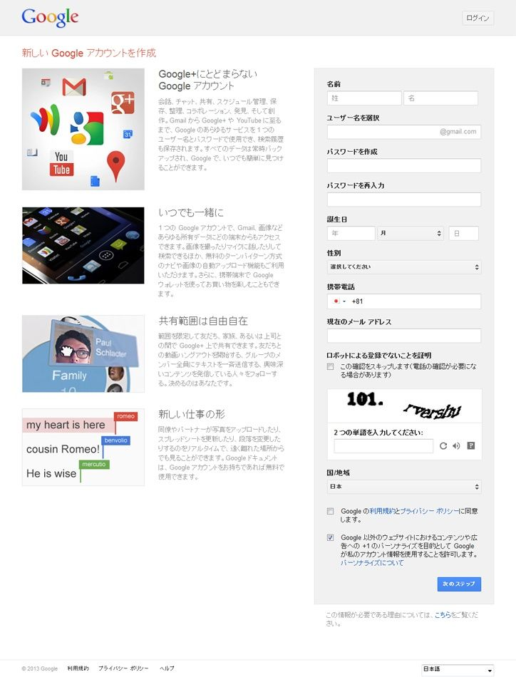
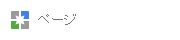
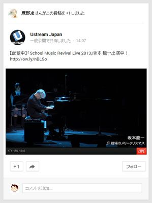
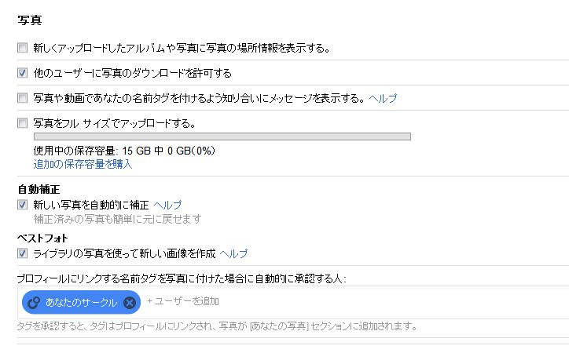
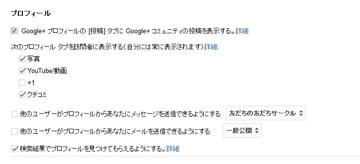
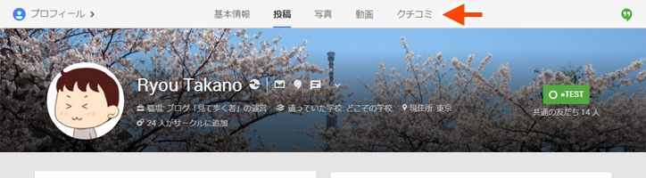
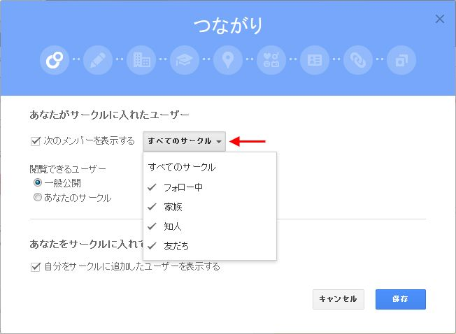
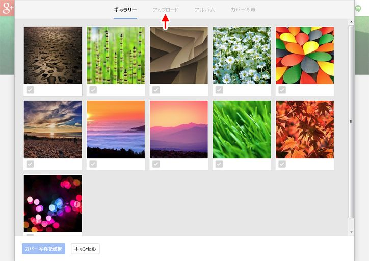

| これもうきっとGoogle+ガイドブック 1.導入編 | |
| 鷹野凌 @ryou_takano | |
| MITEARUKUMONO (2013) | |
Google+をこれから始めようと思っている人や、使っているけどよく判らないという人向けの、非公式ガイドブックです。題名は「これから始める人にも、もう始めている人にも、きっと役立つためになる（と思う）」の略です。全6巻の1巻目で、Google+を利用する上での心構え、初期登録、設定についての解説になっています。2013年5月16日の大規模リニューアル内容を踏まえて改訂し、第3版とします。［2013.8.4］+1情報の設定追加。
Creative Commons licenses
Some rights reserved by Ryou Takano.

この書籍はクリエイティブ・コモンズ「表示 - 非営利 - 継承 2.1 日本（※外部リンク） 」ライセンスの下に提供されています。あなたは以下の条件に従う場合に限り、自由に本書籍の内容（※鷹野凌が著作権を持っているものに限ります）を転載、複製、頒布、展示、実演、二次的著作物の作成ができます。
- 表示――あなたは原著作者のクレジットを表示しなければなりません
- 非営利――あなたは本書籍の内容を営利目的で利用してはなりません。
- 継承―― もしあなたが本書籍の内容を改変、変形または加工した場合、あなたはその結果生じた作品を本書籍と同一の許諾条件の下でのみ頒布することができます。
ただし原著作者から別途許可を得た場合は、上記の許諾条件は適用されません。
はじめに
私は2011年7月15日にGoogle+（※外部リンク） を始めました。以来、1日も休まずGoogle+を使い続けています。Google+の中でも、相当なアクティブユーザーだと思います。だから、Google+はゴーストタウン（※外部リンク） といった無責任な記事を見るたびに、利用している実感とのあまりの落差に憤 りを感じてきました。
ちなみに私はGoogle+以外に、ブログ（※外部リンク） も書いていますし、Twitter（※外部リンク） やFacebook（※外部リンク） も利用しています。いわゆるソーシャル・ネットワーキング・サービス（以下SNS）は、かなりヘビーに使っている方だと思います。ただ、mixi、Tumblr、Pinterestは、あまり使わなくなってしまいました。2ちゃんねるはごくたまーに覗 く程度で、書き込みはしたことがありません。LINEは使っていません。どちらかというと新しいもの好きですが、飽きてすぐ放り出してしまうことも多いです。
Google+はそんな私を虜 にし続けています。洗練されたシステム、直感的で判りやすい画面構成、軽快な動作、便利な機能、そしてなにより、魅力的な人たちと出会えたこと。もちろん人間関係ですから、情報を交換したり会話を楽しむ中で、トラブルも発生します。でも今までのところ、私が見ている範囲では他のSNSで頻発 しているような大きな「炎上」騒ぎは数えるほどしか起きていません。騒ぎが起きても、他のSNSに比べるとすぐ沈静化するように思います。
Google+の月間アクティブユーザー数は、2012年12月時点で1億3500万人（※外部リンク） です。ちなみに、ほぼ同時期に始まったLINEは本稿執筆時点で1億人を突破したばかりなので、Google+の方が利用者数は多いのです。ただ、Google+は世界的に見ればかなり上位のSNSですが、日本ではいまいち流行っていないのは確かです。同時期のニールセン調査（※外部リンク） によると、日本におけるGoogle+のＰＣユーザー（モバイルは含まれていない）は390万人程度。mixiが500万人、Twitterが1270万人、Facebookが1693万人（いずれも本稿執筆時点）ですから、まだかなり差があるというのが実情です。
この本を最初に発行したのは2012年5月ですが、当時Google+でちょっとしたトラブルが起きたことがきっかけでした。とある商業媒体が、他人の限定公開投稿の画面キャプチャを無断で記事に使ってしまうという事件が起きたのです。比較的大きな「炎上」騒ぎだったように思います。その際、周囲の方々へ注意喚起 をするつもりで「Google+を始めたばかりの人が自分の身を守るため気をつけた方がいいこと（※外部リンク） 」という数ヶ月前にブログへ書いた記事を、Google+のストリームに再投稿しました。すると、予想外の反響がありました。何度も再共有され、拡散していきました。最初に投稿した時もそれなりに反響があった記事なのですが、再投稿した日のＰＶは最初の投稿時の倍以上ありました。
何ヶ月も前に初心者向けに書いたエントリーが、これほど反響があるというのは、正直言って少し驚きでした。当時、新たに始めた人や、しばらく使っていなかったけど再開した人を多く見かけるような気がしていたのですが、その数が想像以上だったということなのでしょう。また、Google+は2012年4月11日に大きなデザイン変更を行いました。今まで使っていた人たちも、どの機能がどこへ移動したのか判らなかったり、そもそもそういう機能があったのを知らなかった人というのもちょくちょく見かけました。いまいち流行らないのは、多機能すぎるからなのかもしれないと考えました。
だったら、ガイドブック的なものを作ってみようじゃないの！
と、一念発起 して書いたのがこの本です。最初の発行から9ヶ月が経ち、Google+の機能追加やその後のデザイン変更に追いついていない部分も多くなってきたため、大幅改訂することにしました。表現の見直しなども含め、かなり加筆修正しています。ただの操作説明や機能説明だけではなく、私の独断と偏見による意見も盛り込まれていますので、人によっては合わない人もいると思います。もしかしたら押し付けのように感じる人もいるかもしれません。「それでもいいよ！」という方は、最後までお付き合い頂ければ幸いです。
なお、当書籍の内容は執筆時点のものであり、Googleの開発速度は猛烈に早いのと、A/Bテスト（人によって違う画面を表示して、どちらがいいかのテストをする）をやっている可能性もあるため、画面イメージや仕様が異なっている場合があることをあらかじめご了承下さい。
2013年1月28日 鷹野凌
2013年5月16日のUI変更を反映し、第3版に改訂しました。
2013年6月15日 鷹野凌
第1章 Google+って何なのさ？
この章では、数多くのソーシャル・ネットワーキング・サービス（SNS）の中で、Google+にはどのような特徴があるのか、筆者がどんなところに魅力を感じているかについて述べていきます。

（1）そもそもSNSって何なのさ？
Google+について説明をする前に、そもそもSNSって何だろう？ というところから話を始めることにします。いろんな定義があるとは思いますが、私が考えるSNSとは、
『インターネットを使い、時間や距離の制限を超えた形で、多くの人々と交流することができる仕組み』
です。「SNSは情報収集に役立つ」というような言われ方をすることもありますが、それはSNSの特徴の1つに過ぎません。情報収集もできれば、情報発信もできる。双方向のやり取りがあるから、「ソーシャル（社会）」なのです。つまり、SNSにおいては、何よりもまず人のつながりが重要だと思います。
もちろんその利用目的は人それぞれでしょう。
- 離れて暮らしている家族と連絡を取り合うため
- 学生時代の友人と近況を報告しあうため
- 同じ趣味をもった仲間を見つけるため
- 同じ業界・職種の人と情報交換をするため
- 異なる業界や職種の人と情報交換をするため
- ニュースなど特定の事柄について議論をするため
- 誰かに愚痴 を聞いてもらうため
- 自分の作品を見てもらうため
- 気の合う仲間と同じ時間を共有し、なんてことのない話題で盛り上がるため
- 有名人の発信する情報を見逃さないため
- 有名人に話しかけるため
こういったことは、インターネットを使わなくても可能です。ただ、インターネットを使うことで、時間や距離の制限を超えられるため、その目的を遂げられる可能性が飛躍的 に高くなった、頻度 が高くなった、濃密になったということだと思います。
（2）Google+はTwitterやFacebookやmixiと何が違うの？
世の中には様々なSNSがあり、それぞれに特徴があります。その特徴を大まかに分類すると、以下の3つの重要な要素があると考えられます。
- 人のつながり方が、相互に承認を必要とするか否か（つながり方）
- 投稿内容が会員や友だち以外にも見られるか否か（公開性）
- 会話の流れが把握しやすいか否か（一覧性）
順に説明していきましょう。
1．人のつながり方が、相互に承認を必要とするか否か（つながり方）
Facebookやmixiは、「友だち」関係になるには相互承認が必要です。リクエストを送っても、相手に無視されれば「友だち」にはなれません。それは、つながりを広げるために乗り越えなければならない「壁」です。逆に言うと、ひとたび「友だち」関係を承認すれば、そのつながりは密なものになります。逆に、わざわざ承認した相手との関係を断ち切るのも、心理的なハードルが高いものとなります。
TwitterやGoogle+では、一方的かつ勝手につながることができます。これを「フォローする」と言います。Google+の場合は「サークルに入れる」という行為がフォローです。フォローするのに、相手の許可は不要です。断りを入れる必要もありません。フォロー関係は非対称なので、たとえ相手にフォローされたとしても、フォローし返す義務はありません。そのため、人のつながりは非常にゆるやかで、広がりのある形になります。
なお、Facebookにも「フォロワー設定」という機能が追加されたので、設定を変更すれば一方的かつ勝手につながってもらうことも可能です。しかし、初期設定はオフになっているので、大半の人はオフのままになっています。むろんオフのままにしている人には、勝手につながれないというのが現状です。
2．投稿内容が会員や友だち以外にも見られるか否か（公開性）
mixiは日記やつぶやきを「全体に公開」の設定にしても、原則として会員以外には情報が公開されません。日記のＵＲＬをブラウザへ直接入力しても、mixiにログインしていなければ見ることはできません。一部、会員以外にも見られるようにする機能（mixiページ）は追加されましたが、原則は「閉ざされた世界」です。
Facebookの場合、「公開」で投稿すれば会員以外でも見られますが、Googleの検索ロボットがインデックスすることを原則として拒んでいる（ユーザーの任意で公開する設定に変更可能）のと、Facebook内検索の使い勝手が非常に悪い（日本語にうまく対応できていないようです）ため、中で何が起きているのかが非常に把握しづらくなっています。Yahoo!リアルタイム検索に対応し、過去1ヶ月程度の発言であれば多少拾いやすくなりましたが、基本は「閉ざされた世界」と言っていいでしょう。プライバシー設定がわかりづらいというのも、よく聞く声です。
逆にTwitterやGoogle+は、基本が「オープンな世界」です。一般公開投稿は、会員以外でも見ることができますし、Yahoo!などで普通に検索しても引っかかってきます。普通のブログと全く同じで、全世界に向けて発信するというのが原則です。ただ、設定によって公開範囲を絞ることも可能です。
Twitterの公開範囲設定は、全ての投稿に対し公開するか非公開（フォローされている人にだけ見せる）にするかという両極端な設定しかできません。それに対しFacebookやGoogle+は、1つ1つの投稿ごとに「誰に見せるか」を簡単に設定できます。ここがTwitterとGoogle+の大きな違いです。
3．会話の流れが把握しやすいか否か（一覧性）
Twitterは、誰かに対する返信だろうが何だろうが全て、1つの単独した投稿として扱われます。1対1で対話をしているつもりが、思わぬ方向からコメントが付いて1対多になり、どんどん会話が様々な方向へ分散していき、あっという間に当事者以外には全容を把握するのが難しくなります。フォローしていない相手への返信は、フォローしている相手の投稿でもタイムラインには表示されない仕様というのも、状況を把握しづらくしています。一覧性のある形に判りやすくまとめるためのサービス（Togetterなど）が、別途必要になるほどです。よく「Twitterには『場』が無い」と表現されますが、良い意味でも悪い意味でも、会話の流れをコントロールすることが困難です。
Google+は、Facebookやmixiと同様、投稿に対するコメントが、下にズラッと並ぶ形になります。最初に投稿された内容を「主」とすると、コメントは「従」という関係になり、上から順に読んでいけば、どういう会話の流れになっているかを簡単に把握できます。
つまり、Google+とは次のような特徴を持ったSNSです。
- 他者とつながる際に事前承認を必要としないため、ゆるやかなネットワークが形成できる
- 投稿内容は全世界へ向けて公開から極めて限定的な形まで、投稿ごとに任意で設定できる
- 投稿に対するコメントは一覧性が高く、会話の流れを把握しやすい
これは、どのサービスが優れている・劣っているという話ではなく、それぞれどんな特徴があるか、という話です。その特徴によって、どんな特色が生まれるか、それに対してどう感じるかは、人それぞれだと思います。
例えば私は、Facebookやmixiは相互承認が必要なので、元々親しい友人や家族、直接会ったことのある人とつながるためのサービスだと捉えています。逆にTwitterやGoogle+は基本設計がオープンなので、今まで知らなかった人と出会いやすいサービスだと思います。良い・悪いではなく、それぞれの特徴に合わせた利用をすればいいのではないでしょうか。
（3）Google+は「実名制」なのか？
さて、ここまで読んで「あれ？」と思った方もいると思います。「実名か匿名 か」という分類をしていません。実際のところ、「インターネットは実名制にすることで素晴らしい世界になる」とか、「いやいや匿名だからこそ言える本音があるのだ」といった論争は頻繁 に見かけますが、私は「実名か匿名か」という二元論で語ることに意味はないと考えているため、あえて分類には入れませんでした。
というのは、「匿名性」というのは本人特定の難易度 なので、1か0かではなく段階のある話だからです。2ちゃんねるだって完全な匿名性は持っていません。逆に、「私は実名です」と自称していても、それを証明する術はない人が大半だと思います。もし運転免許証の画像をネットにアップして「本人です！」という主張をしたとしても、画像を加工して捏造 している可能性だってあるわけです。Facebookへ偽名 で登録している人も、たくさんいます。実名を出していると本人特定が比較的容易になるのは確かですが、世の中には同姓同名の方もいます。
問題なのは、「インターネットは、実はそれほど匿名性が高くない」ということを知らない人が多い ことでしょう。以前、中学生がニンテンドーＤＳから2ちゃんねるに通り魔予告を書き込みして、逮捕されたという事件がありました。自分の在籍している大学の悪口を2ちゃんねるに書き込んだ教授が、大学の情報開示請求によって特定され懲戒処分 されたという事例もあります。「名前さえ隠しておけば、簡単には特定できないだろう」というのは大きな勘違いです。
逆に、Twitterで「認証済み」になっていて、ある程度社会的地位のある有名な人が、暴言をわめき散らすという事例もよく見かけます。実名を名乗っていようが隠していようが、もっと言えば実社会の公共空間だろうがインターネット上だろうが、傍若無人 な振る舞いをする人はいます。ただ、インターネット上では情報が伝播 しやすいため、傍若無人な人を把握しやすいということだと思います。
規約だけの比較で言うと、Facebookは実名（real name）制です。mixiは当初実名登録が推奨されていましたが、ある事件（※外部リンク） をきっかけにして制限がゆるやかになりました。Twitterはどんな名前だろうと登録可能です。Google+は実名制より少しゆるやかで、当初から通称（common name）を用いることも容認されていました。
例えば「きゃりーぱみゅぱみゅ」さんは、Google公認である「認証済み」マークが付いた上で普通に活動しており、「芸名」でも問題ないということがわかります。
さらには、2013年5月16日のリニューアルを期に、「Google+ プロフィールの名前付けポリシー［Google+ Profile Names Policy］」（※外部リンク） が変わりました。以前は日本語設定で見ると「実名をフルネーム（氏名）で使用する」という記述だったのが、「あなたを知っているユーザーと交流したり、あなたを検索しやすくするために、自分の姓と名を使用することをおすすめします 」という記述に変わりました。英語設定で見ても「It's recommended that you go by your first and last name because it will help you connect with people you know and help them find you.」となっており、以前の表現よりかなり緩やかになっています。
ただ、残念ながらポリシー変更後でも、いわゆる「ハンドルネーム」は認められていません。Twitterと同じような感覚で名前を登録すると、突然Googleから「名前付けポリシーに違反しているようです」という警告が届きます。ポリシーの表現は穏やかになったのですが、「なんでもアリ」になったわけではないようです。
こういった警告が届いた場合でも、使っている名前について言及している他のSNS、ニュース記事、公式文書へのリンクを追加情報として送信し、不服の申し立てをすることが可能です。以前から使用している「通名 」「芸名 」「筆名 」辺りなら、問題ないようです。ただし、再審査が通らないと、プロフィールが削除されGoogle+が使用できなくなります。いわゆる「BAN」です。使用できなくなるのが困る場合は、他の名前に変更しましょう。なお、名前が変更できるのは2年間で3回まで です。
ちなみに私は当初からペンネームで活動しており、Google+内でもそれを公言していますが、警告を受けたことは1度もありません。周囲で警告を受けた人の話を聞いていると、どうも一般的な「姓」と「名」という形式になっていない（例えば、ハンドルネームを無理やり姓と名に分割しただけとか）とか、名前に記号を使ったり、英語と漢字を混在させたりすると、警告を受けやすいようです。
また、氏名とは別に「ニックネーム」を登録できるようにもなっていますが、そもそも氏名がちゃんと登録されていなければならない（ニックネーム単独での登録はできない）ため、残念ながら「実名は出したくない」というニーズとはイマイチ合致していません。
どうしてもGoogleから警告されてしまう名前を使いたい場合は、「Google+ページ」を使うという手段があります。
Google+ページの詳細については後述 （第7章）しますが、企業やブランド名での使用を想定した仕組みなので、名前に制限はありません。また、誰がオーナーかも判別できないようになっているため、本アカウントとは完全に切り離して運用できます。複数名での管理も可能です。AndroidやiOSのモバイルアプリからでも利用できます。
ただ、ハングアウトでテキストチャットができない（ビデオチャットはできる）、プロフィール情報の設定項目が少ない（性別や誕生日などの［基本情報］と、［仕事］［学歴］［場所］がない）、1日にフォローできる人数が少ない（1日50人くらいが上限）、「友だち候補」が表示されないといった制限があります。
（4）Google+の何に魅力を感じているかを改めて考えてみた
さてここからは、私がGoogle+の何に魅力を感じているのかについて述べていきます。あくまで私の感覚であり、私の観測範囲内での実感です。「違う」という方もいらっしゃるかもしれませんが、あらかじめご了承下さい。
○ 雰囲気 がカジュアルであること
私が感じるFacebookの雰囲気は、フォーマルです。リアルな人間関係をそのまま持ち込むことを目的としているため、常に襟 を正しておく必要があるからでしょう。例えばFacebookでは、嫌いな人（例えば上司）から友だち申請をされ、無視するわけにはいかず苦慮 するような場合があります。義理や義務感で「いいね！」ボタンを押して回っているような人もいるようです。「ソーシャルメディア・ハラスメント（ソーハラ）」や「Facebook疲れ」という言葉が生まれるのも、そういう雰囲気を象徴しているように感じます。
これに対し、Google+の雰囲気はカジュアルでアットホームです。格式ばっておらず、くつろいだ感じがします。ビジネス臭 がしないと言い換えてもいいでしょう。これはもしかしたら、まだ利用者数が少ないからなのかもしれません。新しいもの好きで飛びついた「ギーク（Geek）」や「ナード（Nerd）」といった層や、Facebookに疲れた人、ギスギスした雰囲気になってきたTwitterが嫌になってきた人が、安住 の地を求めてGoogle+に流れ着いているという感じもします。
逆に、例えば津田大介氏（※外部リンク） や佐々木俊尚氏（※外部リンク） といったTwitterで有名な方々が、Google+はちょっと使っただけですぐに離れていってしまったというのも興味深いところです。Twitterで既に多くのフォロワーがいるような方々には、新たにGoogle+でネットワークを構築し直すメリットを感じづらいのでしょう。そういう方々には、TwitterやFacebookとは異なる層から普及していったLINEの方が、魅力的に映るかもしれません。
○ 基本はオープンだけど、場合によっては簡単にクローズにできる
私が感じているカジュアルな雰囲気というのは、相互承認を必要としないオープンなSNSに特有なものなのかもしれません。しかし、Google+は基本的にはオープンですが、任意に自分の意思でクローズにもできます。Twitterを非公開設定（ツイートをフォロワー以外には見せない）にしている人は数％らしいのですが、Google+でサークル内の人々だけに見られる「限定公開」投稿は3分の2を占めるそうです。
私は大半の投稿を誰にでも見られる「一般公開」にしていますが、たまには親しい人にだけ見て欲しいナイーブな話をしたい場合もあります。相互承認を必要としないオープンなSNSで、そういう切り替えを簡単に行えるのはいまのところGoogle+だけではないでしょうか。
○ 凄 まじく高機能かつ多機能
Google+は凄まじく高機能かつ多機能です。私のようなオタク的要素が強い人間には、非常に魅力的です。反面、「はじめに」でも少し触れましたが、高機能かつ多機能過ぎるがゆえに、一般的な方々には複雑に感じられ敬遠されているのかもしれません。TwitterやLINEがシンプルさゆえに広く普及していったのとは対照的です。
例えば、Google+のモバイルアプリには「メッセンジャー」というチャット機能がありますが、テキストチャットはモバイル専用です。パソコン相手にテキストチャットをするには、「ハングアウト（旧 Google Talk）」という別アプリを利用する形になっています。似たような機能を持つ別々のサービスが、まだうまく統合ができていない状態なのです。Google+とLINEのサービス開始時期はほぼ同じなので、もしGoogle+が当初からこれらのメッセージ機能を統合できていたら、LINEがここまで流行ることはなかったかもしれません。非常にもったいない。
○ 高機能なのに安定稼働している
Google+は凄まじく高機能ですが、安定稼働しています。私が記憶している限り、全く利用できないような場面にはほとんど遭遇 したことがありません。
Twitterは非常にシンプルでわかりやすいサービスですが、サーバーへの過負荷によって使えなくなってしまうことがよくあります。最近は少なくなりましたが、以前はよくクジラの絵（サーバーダウンで利用できないメッセージとともに表示される）を見かけました。
Facebookには長時間滞在していることが少ないのですが、それでも時々ログインできない経験があります。「Facebookが使えなくなったのでGoogle+へ一時退避」という方も、ちょくちょく見かけます。
○ Googleが提供している他のサービス群と連動して利用できる
Googleのサービスには検索以外に、Gmail、Googleドライブ、GooglePlay、Googleニュース、YouTube、Googleカレンダー、Googleマップなど、非常に魅力的なものがたくさんあります。そして、これらのサービスは、みんなGoogle+と連動して利用できるようになっています。
残念ながら、Google+を利用しない人にとっては邪魔に感じられてしまう場合もあるようですが、実際に連動させて利用していると非常に便利なので、どんどんGoogle+へのめり込んでいくことになっていきます。正直言って、Googleの全てのサービスをフルに活用するのは難しいと思いますし、私もGoogle+の全機能をフル活用できていません。自分が利用してみて便利だと思った部分だけを、うまく活用できればいいのではないでしょうか。
○ これだけの機能が無料で利用できてしまう
Google+のサービスは、基本的には全て無料です。写真を保存するGoogleドライブの容量追加は有料ですが、アップロードサイズを2048ピクセルの標準サイズにすれば無制限に保存できます。そして、Google+には一切広告が表示されません。Googleは、他のサービスによって充分に儲かっているので、いまのところGoogle+には広告を載せないという選択をしています。Facebookは他にマネタイズする手段がないため、広告を載せないわけにはいきません。だから、Facebookを使っているとあちこちに広告が表示されます。この辺りは、SNSを快適に利用する上では大きな違いです。
その広告が私のニーズに合っていればまだいいのですが、Facebookの場合は全く関心のない分野で押し付けのような広告ばかり表示されるので、不快に感じることが多いです。対照的に、Google+の外で、Google AdSenseで表示される私に最適化された（パーソナライズ）広告には、「わかってらっしゃる」と感じることさえあります。これは、私が個人情報をFacebookにはあまり渡さず、Googleにはガンガンに渡しているというのも要因かもしれません。しかし、Facebookには偽物ブランド品販売などの詐欺 まがい広告が表示されることもあるので、審査基準がゆるいのではないかという気もします。
こういったところが、私がGoogle+に魅力を感じる理由です。
Tips: 画面の向こうにいる人との交流
私がインターネットを利用する際に、忘れてはならないと思っていることがあります。それは、画面の向こう側にいるのも自分と同じ人間なのだということです。これはもちろん、Google+に限った話ではありません。例えば実際にボールを使ってキャッチボールをするのであれば、相手の取りやすい位置、相手の取りやすい早さでボールを投げるでしょう。壁に向かってボールを投げるのとは違い、豪速球 やバウンドするようなボールを投げては、キャッチボールになりません。それと同じように、相手にとってわかりやすい言葉や、失礼にならないような言葉づかいをしなければ、言葉のキャッチボールにならないのです。
人間には感情があります。そしてそれを伝える手段は、インターネット上では基本的に文字です。もちろんカメラを使えば、怒っている表情や笑っている表情を伝えることもできますが、大半の場合やり取りの中心は文字です。文字だけのコミュニケーションなので、直接会って話していれば伝わるようなニュアンスや雰囲気 、表情、身振り手振り、仕草といった非言語手段（non-verbal communication）に頼ることはできません。要するに、こちらの意図していることが相手に伝わりづらいということです。そのため、ニュアンスを補助するために顔文字を使ったり、絵文字やスタンプといったツールが用意されている場合もあります。
だから、何気なく発した言葉が想像以上に相手を傷つけたり、怒らせたりする場合もあります。例えば道に迷ったときに、見知らぬ人へ
「おい、××に行きたいんだけど、道を教えろ」
などといった言い方をするでしょうか？ 相手が気の弱い人なら逃げられてしまうでしょう。怖い人なら、怒鳴り返されたり、ヘタをしたら殴られるかもしれません。それがなぜかインターネット上だと、物理的に離れているからか、相対 しているのがただの画面だからか、向こう側にいるのが人間だということを忘れ、ついつい不躾 な言葉をぶつけてしまいがちです。
インターネット上とはいえパブリックな空間ですから、常識的な振る舞いが求められます。初めて話をする相手であれば、丁寧な言葉づかいをした方がいいでしょう。逆に、何度も交流を重ね仲良くなってきたら、丁寧な言葉づかいだとよそよそしく感じられてしまうかもしれません。冗談や、ボケ・ツッコミなども、ある程度親しい間柄ならいいでしょう。でも、親しき仲にも礼儀ありです。文字だけのやり取りですから、意図が伝わらず、怒らせたり悲しませてしまったりするかもしれません。だから私は、インターネット上では直接相対するときよりもっと、言葉づかいには気をつけたほうがいいと考えています。
第2章 Google+へ登録しよう
この章では、Google+への新規登録、プライバシーなどの設定確認と、プロフィール情報の充実など、Google+を始める上での準備段階について述べていきます。本格的に使いはじめる前に、いろいろ準備をしておきましょう。
（1）新規でアカウント登録をするか、既存のものを使うか
さて前置きはこのくらいにして、いよいよGoogle+を始めることにしましょう。
Google+を始めるにあたって、全くの新規でGoogleアカウントを登録するか、既存のGoogleアカウントを使うかというのを決めておく必要があります。今までGoogleアカウントを持っていなかった方は、もちろん、新規で登録する以外にはありません。問題は、GmailやYouTubeやBloggerやカレンダーのような、利用するにあたってアカウント登録が必要なGoogleのサービスを既に利用している場合です。
2012年3月1日にGoogleのプライバシー ポリシーと利用規約が変更され、Googleが提供する複数のサービスを横断的に利用できるようになりました。1つのアカウントで全てのサービスが利用できるのは非常に便利なのですが、連携されていては困る場合もあります。
例えば今までGmailを匿名で使っていた場合です。そのアカウントでGoogle+を始めるとしたら、もちろん氏名を登録する必要があります。すると、過去に匿名でやり取りしていた相手に、自分の氏名が判るようになります。逆に、仕事で使っていたGmailアカウントでGoogle+を始めると、Google+でも仕事の関係をそのまま引きずることになります。また、Google+のプロフィール画像は、Gmailにもそのまま反映されます。 Gmailの設定で、プロフィール画像の公開範囲を［チャットを許可した相手にのみ表示する］に狭めることもできますが、初期設定は［みんなに表示する］になっています。「そんなの問題ない」という人もいれば、「それは困る！」という人もいるでしょう。ちなみに私は、Google+を始める時に新規でGoogleアカウントを取得し直しました。まっさらな状態から始めたかったからです。
また、Googleのサービスを複数、アクティブに使っている人も、注意する必要があります。名前付けポリシー違反で「プロフィール停止」ならGoogle+などの一部サービスが使えなくなるだけですが、規約違反で「アカウント停止」されると、連動している全てのサービスが使えなくなります。普通に振る舞っていれば問題はないはずですが、知らず知らずのうちに規約違反をしてしまう可能性もあります。万が一にでも連動して止められては困るようなサービスがある場合は、そのアカウントは別の用途には使わない方が無難だと思います。
複数のアカウントを持っていたとしても、「別のアカウントでログイン」することで、複数アカウントをログインした状態（マルチログイン）にできますし、2クリックで切り替えられます。もしマルチログインが信用できないのであれば、GmailのアカウントはFirefox、Google+のアカウントはChromeから利用するといった形で、別々のブラウザを使うといいでしょう。
（2）Googleアカウントを作成しよう
ここからは、パソコンから新規登録をする際の流れについて、説明します。モバイルからの場合は、第5章と第6章をご参照下さい。Googleアカウントにログインしていない状態で、
http://www.google.co.jp/（※外部リンク）
を開くと、次のような画面になります。Googleアカウントにログインしていると、そのアカウントでGoogle+を始めることになります。新規で登録する場合には、Googleアカウントからログアウトしておきましょう。
Google+を始めるには、左上の［+You］をクリックします。ちなみに登録が完了すると、ここには自分の名前が表示されるようになります。

すると、このような画面になります。新規登録なので、右上の［アカウントを作成］ボタンをクリックします。すると、新しいGoogleアカウントの作成画面になります。
- 名前 ...... 姓・名です。この名前は、GmailやGooglePlayやGoogleカレンダーやYouTubeといった、すべてのGoogleサービスで共通して用いられます
- ユーザー名 ...... これがGmailのアドレスになります。英数半角とピリオドが使用できます
- パスワード ...... 8文字以上が推奨されています
- 誕生日 ...... 初期設定では月日が［あなたのサークル］に公開されます
- 性別 ...... 男性／女性／その他から選択できます。初期設定では一般公開です
- 携帯電話 ...... 登録は任意です
- 現在のメールアドレス ...... 登録は任意です
- ロボットによる登録でないことを証明するための単語です
以上を入力して国／地域を選び、利用規約とプライバシーポリシーにひと通り目を通した上で、同意にチェックをして下さい。Gmailのアドレスは、他に同じユーザー名を使っている人がいる場合、登録ができず警告が表示されます。
なお、例えばメディアに記事を寄稿しているなど、Google+の外で使用している名前がある場合は、そのコンテンツとGoogle+のプロフィールを結びつける著者情報［Authorship］（※外部リンク） に関わってくる ため、記事の署名とプロフィールの氏名は表記を揃えておきましょう。ただし、その名前がGoogle+の名前付けポリシー（※外部リンク） に準拠していない場合は、前述のとおり プロフィール削除（BAN）されてしまいますので気をつけましょう。
入力ができたら［次のステップ］をクリックします。
次のステップでは、テキストメッセージ（SMS）または音声通話によるアカウント確認を求められる場合があります 。SMSはキャリアによってはうまく届かない場合があるため、音声通話（自動の録音音声）の方が確実だと思います。6桁の確認コードを入力したら、次へ進みます。
次のステップでは、プロフィール写真を追加できます。事前に「この写真にする！」と決めていた方はここで写真追加をしてもいいですが、後からプロフィールを編集する際でも写真の追加や変更はできますので、迷った人はそのまま［次のステップ］をクリックしましょう。このガイドでは、ここはスキップさせて頂きます。

これでアカウント作成は完了です。右上に氏名、赤い四角に数字、Google+への投稿欄（［＋共有］の表示）、プロフィール画像が表示されるようになります。
（3）Google+の通知を確認しよう
右上の、赤い四角に数字が書いてあるアイコンは、自分に届いている通知の数です。新しい通知が無い場合は、灰色の四角に［0］という表示になります。新しい通知が届くと赤くなったりアニメーションをするので、結構目に付きます。
これは、Googleリーダー、Gmail、YouTube、GooglePlay、Googleドライブといった、他のGoogleのサービスでも共通した表示なので、Googleのサービスを利用しているとだんだん右上を見るのが癖になってきます。通知アイコンをクリックすると、通知一覧がプルダウンの形で表示されます。
最初に届いている通知は、Google+についての説明です。まず「Google+へようこそ」という通知をクリックしてみましょう。
通知欄右上の［< 前 | 次 >］をクリックすると、前後の通知へ移動します。左上の［< 戻る］をクリックすると、通知一覧へ戻ります。通知は、投稿に自分の名前リンクがある、自分の投稿にコメントが付いた、サークルに追加された、イベントやコミュニティへ招待された、などなど、自分に関連のあるできごとが起きたときに届きます。
通知一覧へ戻ると、既読の通知はグレーに変わります。また、［すべてのお知らせを表示］をクリックすると、画面全体でお知らせの一覧を確認することができます。この辺りはまた後ほど詳しく説明します。
左下の［Google+に移動］をクリックすると、次の画面へ移動します。
（4）Google+のおすすめユーザーをフォローしよう
［Google+に移動］をクリックすると、「Google+で知り合いを探す」という画面に切り替わります。ここではYahoo!やhotmailのアドレス帳をインポートできます。不要な場合は［スキップ］をクリックします。
念押しをされますが、不要な場合は［続行］をクリックします。
すると次に「人気のユーザーやページをフォローしてみましょう」という画面が出てきます。ここでは、Google+がお勧めする有名人やGoogle+ページが、
- Google+のおすすめ
- テクノロジー
- ゲーム
- スポーツ
- 音楽
- 写真＆アート
- エンターテイメント
- ファッション
- 政治
- 娯楽＆エンタメ
- 旅行＆車
- フード・ドリンク
- ニュース
- YouTubeで人気
といったジャンル別に紹介されています。
原則として、あなたが誰をフォローするかによって、Google+のメイン画面である「ホーム」の「ストリーム」を流れる投稿が決まります。 あまり活動していない人をフォローしていれば閑散 としたストリームになりますし、殺伐 とした人をフォローしていれば殺伐としたストリームになります。あなたの見ているストリームは、あなた自身が作り上げたものです。あなたの意志で自由に編集できます。
もっと言えば、投稿ごとに「誰に公開するか」を指定できるため、仮に誰かと全く同じ人をフォローしたとしても、相手とは同じストリームにならない可能性が高いです。だからこそ、こういったサービスを利用する時に多くの方が悩むのが、「誰をフォローすればいいのか？」という点なのでしょう。誰をフォローするかは、あなたの興味・関心次第 です。相手がどういう人なのか、普段どんな投稿をしているかを確認した上で、フォローするかしないかを決めてもいいでしょう。逆に、あまり細かいことにはこだわらずにサクサクとフォローして、自分に合わない相手だと思ったらフォローを解除したり、隔離 して投稿を見えないようにするのも手です。「私にその情報を見せないで！」と相手にお願いするより、自分からフォローを解除した方が簡単ですし確実です。
ではまず、Google+のおすすめを開いてみましょう。［フォロー］のボタン以外のところをクリックすると、Google+のおすすめに登録されている方々やGoogle+ページの一覧と、最近の投稿内容が確認できます。
［全員をフォロー］をクリックすると、そのカテゴリに登録されている全員をフォローします。小さいプロフィール画像をクリックで切り替え、左右の < > にマウスを重ねるとスクロールします。ここではまず「初音ミク」さんをフォローしてみます。こちらはクリプトン・フューチャー・メディア株式会社のキャラクター「初音ミク」さんの公式アカウントです。
(c) Crypton Future Media, Inc. www.crypton.net
左側の大きいプロフィール画像の下にある［フォロー］ボタンにマウスカーソルを重ねると、あらかじめ用意されている「サークル」の一覧が表示され、どのサークルに入れるかを選べるようになっています。サークルについては後ほど詳しく説明しますが、ここで紹介されている方々はひとまず［フォロー中］に入れましょう。 左にある□をクリックすると、フォローできます。

初めて誰かをフォローする時は、このように説明が表示されます。［ＯＫ］をクリックすればフォロー完了です。
［フォロー］のボタンは、緑色の［フォロー中］というボタンに変わります。同じように、［フォロー中］へマウスカーソルを重ねてサークル一覧を表示し、［フォロー中］のチェックを外せばフォローを解除できます。
同じ要領で、他の人やGoogle+ページもフォローしてみましょう。Googleのサービスを利用する上でお勧めなのは、Google Japanの公式Google+ページ（※外部リンク） です。Google Japanの行うイベントや、新機能の紹介、便利な使い方などが配信されます。
この画面からカテゴリ別一覧の画面へ戻る場合は、右上の×をクリックします。
カテゴリ一覧で［続行］をクリックすると、次へ進みます。なお、少なくとも10人以上フォローしないと、「少ないよ！」という警告が表示されます。
Tips: 「Google+ おすすめ」について
Google+初期登録時に表示されるされるおすすめとは別に、「Google+おすすめ（※外部リンク） 」というウェブページが用意されています。「イベント」や「コミュニティ」といったGoogle+のさまざまな機能とあわせ、一覧性の高い形で紹介されておりわかりやすいです。
（5）プロフィール情報を整えよう
次の画面では、プロフィール写真の追加と、勤務先、学歴、住んでいる地域の入力ができます。これらの情報は必須項目ではありませんし、公開範囲を狭めることもできます。ただ、Google+で他の方々と交流をする上では、空欄ではなく何かしら入力しておくことをお勧め します。でも、具体的な情報を載せるかどうかは、悩ましいところです。
Google+のシステム設計は基本的にオープンなので、自分の身を守りたいのであればプライバシー情報はあまり公開しない方がいいでしょう。だけど、何も情報を出さなければ、周囲の人にあなたがどんな人かを知ってもらうことができません。この辺りはジレンマです。
例えば勤務先は「業界」だけとか、住んでいる地域は都道府県までにしておくなど、ざっくりとした情報までに留めておく方が無難だと思います。もちろん、詳細に自分の情報を登録し、全部おっぴろげにしておくのも自由です。とくに「もっと有名になりたい」という場合は、自分の経歴を詳細に記しておいた方がいい と思います。
ただ、誰だってどこでどんな恨みを買うかわかりませんし、ストーカーに付きまとわれる危険性だってあります。例えば、運転免許証や保険証・社員証・パスポートなどを胸に貼り、誰でも見られるように晒 して歩いている人は、あまりいないでしょう。インターネット上に個人情報を公開するというのは、これと同じことだと思います。
さて、プロフィール写真というのは、常に周囲に見られることになるあなたの「顔」です。どういう画像を選ぶかで、周囲へ与える印象が全く変わります。プロフィール写真が笑顔の人が投稿している文章と、プロフィール写真が怒った顔の人が投稿している文章では、仮に内容が全く同じでも周囲への伝わり方が変わってしまうのです。名前は覚えていなくても、プロフィール写真は覚えているという場合もあります。だから、どういう画像をプロフィール写真に選ぶかは、まさしくあなたの個性そのものです。
一般的に「アイコン画像」というと、64×64ピクセル程度の小さな画像が用いられる場合が多いのですが、Google+の場合は250×250ピクセル以上の画像を使用 することになっています。250×250ピクセルより大きい画像をアップロードした場合は、使用範囲の設定や縮小もできるので、大きめの画像を用意しておくといいでしょう。この画像は、「アバターメーカー（※外部リンク） 」の「アバタージェネレーター（※外部リンク） 」で作成しました。元画像が96×96ピクセルのものを引き伸ばしているので、少しピンぼけになっています。
なお、上部に「この写真であなただとわかってもらえますか？顔を認識できません」という警告が出ていますが、これはGoogleのアルゴリズムでこの画像が「人間の顔」だと認識されていないという意味です。デフォルメされたイラストなどを用いた場合は、人間の顔だと認識されない可能性が高いようです。
また、「（2）登録しよう 」で触れた著者情報［Authorship］（※外部リンク） で、Googleの検索結果にプロフィール写真を表示させるには、プロフィール写真に登録した画像が人間の顔だと認識される必要 があります。写真ではなくイラストでも人間の顔だと認識される場合もありますので、いろいろ試してみるといいでしょう。
ちなみに私は、Google+で自分自身の顔写真を用いることをあまり推奨 していません。顔写真というのは、プライバシーに関わる問題に発展する可能性が高いからです。詳しくは後述 しますが、「顔写真自動検出」と「名前タグ付け自動承認」といった機能によって、思いもよらない形でプライバシー情報が漏 れてしまうかもしれないのです。
もちろん「自分の顔を売りたい」場合、すなわち「もっと有名になりたい」場合は、自分の顔写真を使うべき でしょう。そうでない場合は、mixiやFacebookと違って基本的にオープンな場所ですから、身体的特徴を表に晒 すのはなるべく避けた方が無難だと思います。例えばペットの写真を使われる方も、結構多いです。
だからといって、誰かの描いた絵を無断で使用するのは著作権侵害になる可能性があります。実は私も以前、勝手に使用していて怒られたことがあります。使いたい場合は、その画像の著作権者に許諾 を取りましょう。
また、「パブリックドメイン（著作権切れ）」の画像や、非商用利用であれば無許可で構わないという形で画像を公開している方もいます。「クリエイティブ・コモンズ・ライセンス（※外部リンク） 」を表示している場合は、その許諾する範囲（例えばCC-BYであれば原作者のクレジットを表示すればOK）であれば使用することができます。アニメなどの公式サイトが、アイコン用として画像を配布している場合もあります。検索サイトで、「フリー 画像」などのキーワードで探してみるといいでしょう。
クリエイティブ・コモンズ 表示 - 非営利 - 継承 2.1 日本（CC BY-NC-SA 2.1 JP）ライセンスのアイコン
http://creativecommons.org/licenses/by-nc-sa/2.1/jp/ （※外部リンク）
ところで、先ほど私は勤務先、学歴、住んでいる地域について「空欄ではなく何かしら入力しておくことをお勧めします」という書き方をしました。それはなぜかというと、誰かをフォローすると相手にその通知が届く からです。フォロー通知は、あなたと相手の初めての遭遇 です。プロフィール情報を整えていない段階で、フォロー通知を受け取った相手が、あなたがどんな人かを確認するためプロフィールページを開くと......
「あんたどこの誰だよ？」
という感じですね。相手に伝わるのは、アカウント作成時に必須項目である名前と性別くらいだけです。ちょっと印象が悪いですよね。そのまま放置される可能性が高いです。フォロー通知が相手に届くまでには少しタイムラグがありますが、それでもやはり本格的に活動開始する前に、ある程度プロフィール情報を整えておくことをオススメします。
入力が完了したら［終了］をクリックすると、Google+への登録が完了し、Google+のホーム画面が表示されます。
（6）ホーム画面について
ホーム画面は、ブラウザの横幅によって表示が変わります。ブラウザの横幅が狭い（だいたい800px未満）場合は、投稿が1列で表示されます。
ブラウザの横幅がある程度広い（だいたい800pxから1600pxくらい）場合は、投稿が2列で表示されます。
ブラウザの横幅が広い（だいたい1600px以上）場合は、投稿が3列で表示され、右端に「ハングアウト」の対象一覧が表示されます。
ハングアウトの対象一覧は、右上のこのアイコンをクリックすると表示したり格納したりを切り替えられます。
左上の［ホーム］アイコンにマウスカーソルを重ねるか、キーボードの［←］を押すと、Google+のメニューが表示されます。
画面を下へスクロールすると、上部のメニューは自動的に隠れます。上へスクロールすると、再び表示されます。
フォローしている人から新しい投稿があると、左上に［新着×件］という表示が出ます。これをクリックするか、キーボードの［L］を押すと、新しい投稿を読み込みます。
上部の［友だち］［家族］［知人］［フォロー中］をクリックすると、サークル別のストリームに切り替えられます。なお、アカウントを新規登録したばかりの場合、何か画面内で操作をするとその都度ガイダンスが表示されます。
この辺りの詳細については、第3章で解説します。
（7）Google+のメニューについて
前述のとおり、左上の［ホーム］アイコンにマウスカーソルを重ねるか、キーボードの［←］を押すと、Google+のメニューが表示されます。このメニューの中身について、簡単に説明しておきます。それぞれ詳細は、後の章で説明していきます。
○ ホーム
他のメニューから、［すべて］のストリーム表示へ戻るボタンです。
○ プロフィール
自分のプロフィールを編集したり、過去の投稿一覧を確認したりできます。
○ つながり
Googleがあなたの情報から自動的に算出した［友だち候補］の一覧や、自分をフォローしている人や、自分がフォローしている人の一覧を確認したり、サークルを編集したり、フォローしたりフォローを解除したりといった作業ができます。そういった、他者とのつながりを管理するメニューです。
○ 写真
自分がアップロードした写真や、自動バックされた写真、アルバムの一覧などが表示されます。写真のアップロードや編集、アルバムの整理などが行えます。
○ 注目の投稿
Google+の「注目＆おすすめの投稿」一覧が表示されます。
○ コミュニティ
Google+の機能の1つで、共通の分野について話をする場所「コミュニティ」の検索や参加、作成や招待、投稿・コメントなどができます。
○ イベント
Google+の機能の1つで、オンライン・オフライン問わず特定の日時に集まって何かをやろうという「イベント」企画の検索や参加、作成や招待などができます。
○ ハングアウト オンエア
Google+の機能の1つで、ビデオチャットを配信する「ハングアウト オンエア」での検索や開始ができます。
○ ページ
Google+ページは、企業や商品・ブランド名などでの活動を行うための機能です。ここから自分の管理しているGoogle+ページへの切り替えや作成ができます。
○ ローカル

Google+の機能の1つで、「Googleマップ」と連動した地域のお店や観光スポットなどの「ローカル」情報を検索したり、クチコミを書いたりといったことができます。
○ 設定
ここから、Google+のアカウント設定ができます。
［設定］の下には、Googleへフィードバックをする［ご意見・ご感想］や、［使い方ガイド］［ヘルプ］［地域を設定］［マップ利用規約］があります。
なおこれ以外に、［ゲーム］というメニューもありましたが、2013年6月30日でサービス終了しました。新しく始まったAndroidの［Google Playゲーム］でGoogle+の交流関係を利用する形になっていますが、このガイドでは詳細は省かせて頂きます。
（8）まずアカウント設定を確認しておこう
それではまず、Google+の設定を確認しておきましょう。初期設定からあまり大きく変更する必要はありませんが、何ができるのかは把握しておいた方がいいです。
左メニューから［設定］をクリックすると、Googleアカウントの設定画面が開きます。Google+のさまざまなアカウント設定を、ここから変更できます。なお、［保存］などの操作は不要で、チェックやプルダウンを変更した瞬間にその設定は自動保存されます。
○ あなたやあなたの投稿にアクセスできるユーザーの設定
まず一番上の、「あなたやあなたの投稿にアクセスできるユーザー」について。「お知らせをあなたに送信できるユーザー」というのは、他の誰かが以下のようなことをした場合に、あなたに通知を送るかどうかという範囲を指定できる設定です。
- 投稿をあなたと共有したときや、共有元のユーザーが受信者に通知するよう選択したとき
- あなたの名前がある投稿やコメントを送信したとき
- あなたをハングアウトに招待したとき
- 写真にあなたの名前タグを付けたとき。
- あなたをイベントやコミュニティに招待したとき
初期状態は［友だちの友だちサークル］に限定されています。「何でもウェルカム！」という人は、［全ユーザー］に切り替えておきましょう。こういった通知は、自分がサークルに追加した人からのみ貰いたいという場合は、［あなたのサークル］に切り替えておきましょう。
例えば「イベントの招待」や「コミュニティの招待」などは、ほとんど関わったことのない見知らぬ相手にもポンポン送ってくる人がいたりするので、もしそういう行為が頻発するようであれば、ここで通知を受け取る範囲を絞ることができる ということを覚えておきましょう。
なお、あなたの投稿へのコメントや＋1、サークルに追加された場合は、「ミュート」をしてない限り必ず通知が届きます。ミュートに関しては、第3章で説明します。
次に「あなたの一般公開の投稿にコメントできるユーザー」について。この設定を変更し、コメントできるユーザーの範囲を狭めてしまうと、知らない方との交流を初めからシャットアウトする形になってしまう ので、あまりお勧めしません。ひとまず［全ユーザー］のままにしておきましょう。
○ あなたとハングアウトできるユーザー
あなたとハングアウトができるできる範囲の変更や、お知らせの設定です。［カスタマイズ］をクリックすると、設定一覧が開きます。
この設定が［あなたとのハングアウト］になっている対象からは、テキストメッセージやビデオハングアウトの招待が特に制限なく届きます。
［リクエストの送信］になっている対象からは、［ハングアウト リクエスト］が送られてくる形になり、［承認］か［無視］かを選択できます。
一度［承認］した相手からのメッセージは、以後は特に制限なく届くようになります。［ハングアウトのリクエストに関するお知らせを受け取る］のチェックを外すと、ハングアウト リクエストの通知も届かなくなります。
○ お知らせの配信と登録リストを管理
「お知らせの配信」は、初期登録した際のメールアドレスになっています。もし通知を受け取るメールアドレスを別にしたい場合は、［メール アドレスを追加］から登録して切り替えられます。
「登録リストを管理」の設定にチェックが入っていると、Google+からときどき「サークルの最近の投稿」などのお知らせがメールへ届きます。この辺りはそのままにしておいていいでしょう。
○ メールでどの通知を受信する？
さて次は、その下の「お知らせを受信する」について。ここにチェックが入っていると、ホーム画面の通知とは別に、メールで通知が届きます。初期設定状態では、すべてにチェックが入った状態になっています。メールからは直接返信したりできますし、Gmailは検索しやすいというメリットもあります。
ただ、これを便利に感じられるのは、通知の頻度 次第でしょう。他の方と頻繁 にコメントなどのやり取りをすると、Gmailの受信トレイが通知メールだらけに なってしまいます。
もし通知メールが多すぎると感じるようであれば、Gmailの「メールの自動振り分け設定」を使い受信トレイをスキップ（アーカイブする）しておくか、この設定で通知のチェックを外しておきましょう。
とくに「自分が作成した投稿にコメントが追加されたとき」や「自分が作成した投稿にコメントが追加されたとき」は、他の人と交流していれば頻繁に起こることなので、通知頻度が高いです。
○ +1、ページ、アプリとアクティビティの設定
さて次は、+1、ページ、アプリとアクティビティの設定です。
「Google +1」は、Google+以外のサイトで+1ボタンを有効にするかどうかの設定です。+1ボタンの履歴はGoogleに集積されて、Googleで検索したときの結果やGoogleの広告などの「パーソナライズ」に反映されます。Googleの様々なサービスを便利に利用したいのであれば、有効のままにしておいた方がいいでしょう。
「Google+ ページ」は、企業や商品・ブランド名などでの活動を行うための機能です。この設定では＋を付けて検索した時に、自動的にサークルへ追加するようにできます。私は自動で追加されたくないので、チェックは入れていません。
「アプリとアクティビティ」の［アプリ］では、Googleアカウントを使ってログインをしたサードパーティー製アプリやサイトを管理できます。利用情報をだれに公開するかの範囲変更や、利用ログの削除、接続の解除などができます。初期状態では「まだ Google+ ログインを使用して接続したアプリはありません」になっています。
また、ここには「投稿の +1のアクティビティ」という重要な設定があります。これは、Google+の一般公開投稿に対しあなたが+1をした情報（アクティビティ）が、「閲覧できるユーザー」のストリームに流れる というものです。いまのところ、限定公開投稿へ+1をした情報や、Google+以外のサイトで+1をした情報は、ストリームには流れません。上部の［Google］タブをクリックするか、こちら（※外部リンク） から設定を変更できます。
+1をした情報が誰のストリームに流れるかは、「閲覧できるユーザー」の公開範囲によって決まります。初期設定では［友だちの友だち］になっており、かなり広い範囲に+1をした情報が流れるようになっています。+1をした情報を見られたくない場合は［編集］をクリックし、公開範囲を［自分だけ］に変更しておくといいでしょう。逆に、+1をした情報をなるべく多くの人に見てもらいたい場合は、［一般公開］にしておくといいでしょう。なお、自分が+1をした履歴は、［ログ］タブで見られます。
+1をした情報は、ストリームにはこのように「××さんがこの投稿を +1 しました」という形で表示されます。
○ 「あなたのサークル」のカスタマイズ
さて次は、「あなたのサークル」です。ここの「カスタマイズ」をクリックすると、設定画面が開きます。「あなたのサークル」という名称はちょっとややこしいのですが、より親密度の高いサークルを、それ以外のサークル（フォローのみ）とは別の扱いにする というものです。
この設定では、どのサークルを［あなたのサークル］の対象とするかをカスタマイズできます。初期状態では、［友だち］［家族］［知人］の3つが「あなたのサークル」 になっています。
例えば、ストリームへ投稿する時には宛先（公開範囲）が指定できますが、［一般公開］や個別のサークル以外に、［あなたのサークル］という選択肢があります。初期状態のまま［あなたのサークル］を公開範囲に指定すると、個別に［友だち］［家族］［知人］の3つのサークルを指定したのと同じ ことになります。なお、この「あなたのサークル」という公開範囲設定は、結構あちこちで用いられています。
「（4）Google+のおすすめユーザーをフォローしよう 」で、「ここで紹介されている方々はひとまず［フォロー中］に入れましょう」という説明をしたのは、恐らく紹介されている人のほとんどは［友だち］［家族］［知人］には当てはまらないからです。
サークルをどのように分類するかはあなた次第ですし、サークルの名称も変更できますが、ひとまずこの設定はこのままにしておいた方がいいと思います。ただ、どのサークルが「あなたのサークル」なのかは、しっかり覚えておきましょう。
○ ユーザー補助
ここにチェックを入れると、文章読み上げ機能などがちゃんと働くように、ストリームの表示がどういうブラウザ幅でも1列表示になります。
2013年5月16日のリニューアルより前のレイアウトに近い表示になるので、2列や3列の表示に違和感のある方はチェックを入れるといいでしょう。
○ 写真のダウンロードや顔識別機能や自動補正
続いて、写真関連の設定です。「新しくアップロードしたアルバムや写真に写真の場所情報を表示する。」の設定はオフのままにしておくことをお勧めします。うっかりオンにすると、写真をアップロードするたびにあなたの居場所がダダ漏れになります。自分の住所を全世界に向けて発信するようなものです。
「他のユーザーに写真のダウンロードを許可する」にチェックが入っていると、ストリームへ投稿した写真の拡大画面にある「オプション」メニューに「フルサイズをダウンロード」という項目が表示されます。自分がアップロードした写真を他人に勝手に二次利用（転載・加工など）されたくない場合は、チェックを外しておきましょう。画面のハードコピー（PrintScreen）を防ぐことはできませんが、「二次利用されたくない」という意思表明にはなると思います。ただ、残念ながら世の中には無断で転載してしまう人というのも少なからず存在するので、絶対に二次利用されたくない画像はアップロードしないこと です。
自分の顔写真をプロフィール写真に使っている場合は、「写真や動画であなたの名前タグを付けるよう知り合いにメッセージを表示する（顔識別機能）」をオンに設定するかどうかは、特に慎重に判断した方がいいと思います。私は、オフのままにしておいた方がいいと思います。というのは、顔識別機能を有効にしておくと、誰かが知らないうちにあなたの写真を撮ってアップロードしたときに、勝手にタグ付けされてしまう可能性があるのです。
タグ付けされれば通知が届きますし、後述の「自動承認」設定の範囲外からタグ付けされた場合は承認／拒否の選択もできるので、「知らないうちにタグ付けされていた」ということは起きづらいのですが、ついうっかり承認してしまうという可能性もあります。例えば、身内に内緒で出かけた時の写真にタグ付けされると、内緒にしていたことがバレてしまうといった事態が考えられます。写真に場所情報が付いていたりすると、どこへ行っていたかも特定されてしまいます。
もちろんそれが自分の意思で発信する情報なら全く構わないのですが、他者によってそういう事態が引き起こされるというのは、私は嫌です。自分の顔写真をプロフィール写真に使い、この設定を有効にしていると、そういう思いもよらぬ事態が起こり得るのです。
幸い初期設定はオフになっていますが、ストリームに投稿した画像を開くと上図のような説明が表示されるので、うっかり有効にしてしまう可能性がありますので注意しましょう。なお、自分の顔写真をプロフィール写真に使っていない場合は、こういった心配はありません。
これは写真に限った話ではありません。オフ会などで直接会った人が、本人が公開していない情報をバラしてしまう場合があります。年齢を明かしたくないという人や、性別を明かしたくないという人もいるでしょう。太っている、痩せている、目立つ位置にホクロがある、傷や火傷の跡がある、などなど。
直接会うことによって知り得る情報というのは、たくさんあります。そういった情報をバラしてしまう人には、全く悪意が無い場合も多いです。バラされたくないのであれば、相手にその意思を伝えておきましょう。逆に、他者の身体的特徴を発信する際は、本人が公開しているかどうかを確認してからにしましょう。
「写真をフルサイズでアップロードする」設定がオフになっていると、縦横2048ピクセル以上の画像はアップロード時に自動縮小される代わりに容量無制限でアップロードできます。オリジナルサイズのままアップロードしたい場合は、オンにしましょう。
「自動補正」の「新しい写真を自動的に補正」をオンにしておくと、画像のアップロード時に明るさや色温度などに自動補正がかかります。自動補正されたくない場合はオフにしておきましょう。
「ベストフォト」の「ライブラリの写真を使って新しい画像を作成」をオンにしておくと、連続写真を元にして自動的にアニメーション画像を作成したり、自動的にパノラマ写真を作成したり、何枚か撮ったグループ写真から笑顔を検出をして全員が笑ってる写真を作成したりといった、自動合成機能が働きます。オリジナル画像はそのままですが、合成された新しい画像が［写真］に自動的に追加されるようになるので、邪魔な場合はオフにしておきましょう。
「プロフィールにリンクする名前タグを写真に付けた場合に自動的に承認する人」は、前述の顔識別機能を有効にしているときに、名前タグ付けを自動承認する範囲の設定です。初期設定値は［あなたのサークル］になっています。この範囲に設定している人からタグ付けされると、あなたに承認／拒否を確認せず自動承認する形になります。前述のとおり、写真の名前タグは思いもよらぬ事態を引き起こす可能性があるので、自動承認はあまりお勧めしません。
○ 自分のプロフィールページにどんな項目を表示する？
次に、自分のプロフィールページにどんな項目を表示するかの設定です。とはいえ、ここで設定できるのは一部の項目に限られます。詳細な設定については「（10）プロフィール情報の公開範囲を確認しよう 」や「（11）プロフィール情報を充実させよう 」で説明します。
「プロフィールにGoogle+コミュニティの投稿を表示する」は、自分のプロフィール情報の［投稿］タグに、一般公開コミュニティへの投稿を表示するかどうかの設定です。コミュニティへの投稿は、同じコミュニティに参加している人のストリームには流れますが、参加していない人のストリームには流れません。ただ、プロフィール情報の［投稿］タグを見ると、一般公開コミュニティへの投稿は見られるようになっています。それをここから解除（つまり見えないようにする）できます。自分がどんなコミュニティに入っているのか？を、あまり周囲に明かしたくない場合に解除するといいでしょう。
もっとも、一般公開コミュニティへの投稿は、コミュニティを開けば参加していなくても閲覧だけはできる ようになっているので、あくまでこれは自分のプロフィール情報の［投稿］タグに表示する／しないを切り替えるだけの機能です。なお、限定公開コミュニティの投稿は、どういう形であっても同じコミュニティの参加者しか見られません。
「次のプロフィール タブを訪問者に表示する」は、［写真］・［YouTube］または［動画］・［+1］・［クチコミ］のタブを、他の人へ表示するかどうかの設定です。［基本情報］と［投稿］以外のタブは非表示にできます。
例えば［写真］タブを表示していると、あなたが過去に一般公開でアップロードした画像を他人が一覧で表示できるため、1枚1枚の画像に連続して+1されてしまい、通知が+1だらけになってしまうような場合があります。［写真］タブを非表示にすると、こういう事態を防ぐことができます。
「他のユーザーがプロフィールからあなたにメッセージを送信できるようにする」を有効にすると、あなたのプロフィールページに［メッセージを送信］のアイコンが追加されます。
［メッセージを送信］アイコンをクリックすると、その相手だけを宛先にした限定公開投稿のフォームが開きます。通常の投稿欄で、宛先に相手だけを指定するのと同じです。
「他のユーザーがプロフィールからあなたにメールを送信できるようにする」を有効にすると、あなたのプロフィールページに［メールを送信］のアイコンが追加されます。つまり、Google+のプロフィールに、メールフォームを簡単に設置できる のです。この設定は、有効にしておくことをお勧めします。
［メールを送信］アイコンをクリックすると、相手のメールアドレス非公開のメールフォーム が開きます。つまり、自分のメールアドレスを公開しなくても、自分宛にメールを送ってもらうことが可能なのです。これは便利。
このメールフォームから送信されたメールには、ちゃんと「送信者はあなたのメールアドレスを知りません」と記載されています。
「他のユーザーがプロフィールからあなたにメッセージを送信できるようにする」と「他のユーザーがプロフィールからあなたにメールを送信できるようにする」は、どちらも他者が自分に対し連絡を取りやすくする手段 なので、初期設定ではオフになっていますが、私はオンにしておいた方がいいと思います。
「検索結果でプロフィールを見つけてもらえるようにする」は、Googleやその他の検索エンジンでプロフィールをインデックス登録するかどうかの設定です。自分を検索で見つけられたくない場合は、この設定をオフにします。普通に使う場合は、オンのままにしておきましょう。
○ 自動ハッシュタグを有効にする？
これは非常にユニークな設定です。「関連するハッシュタグを新しく作成した投稿に自動で追加する」を有効にしていると、あなたが投稿した文章・写真・動画などを解析し、自動的にハッシュタグが付く場合があります。
頻繁に用いられるような、いわゆる「ビッグワード」が自動ハッシュタグになりやすいようです。ハッシュタグをクリックすると、Google+内で同じハッシュタグが付いている投稿を検索して表示できます。なお、自動で付いたハッシュタグは、×で削除できます。
○ 現在地の共有を有効にする？
こちらはちょっと危ない設定。「現在地の共有を有効にする」を有効にすると、Androidなどの位置情報からあなたの現在地をGoogleが記録し続けます。誰かを公開範囲にすると、あなたの現在地を共有し続けます。初期設定値はオフになっており、共有範囲も［自分だけ］になっています。もし共有するとしても、家族間など極めて親しい間柄に限定しておいた方がいいと思います。
○ Google+を無効にする？
一番下の「Google+ を無効にする」は、Google+をやめる場合に利用します。これについては、この章の最後 で詳しく説明します。
（9）おすすめのアカウント設定
私のおすすめは、次の図のような設定です。
変更箇所は以下の通りです。
- 「お知らせをあなたに送信できるユーザー」を「全ユーザー」に変更
- 「通知」の「投稿」は、通知が煩わしくなってきたらチェックを外す
- 「写真」の「他のユーザーに写真のダウンロードを許可する」のチェックを外す
- 「プロフィール」のメッセージとメールにチェックを付けて「一般公開」にする
「お知らせをあなたに送信できるユーザー」は、最初は間口を広げておいたほうがいいと思います。逆に、投稿関連の通知は交流する相手が増えると頻度が高くなるので、メール通知までは必要ないのではないかと思います。交流する相手が少ないうちや、全てのログを残しておきたい場合はオンのままでいいですが、通知が煩わしくなってきたらオフにするといいでしょう。写真のダウンロードは、「勝手に使っていいよー！」というスタンスではない限り許可しない方がいいと思います。「プロフィール」のメッセージとメールは、あなたに対する連絡手段の提示なので、これも間口を広げる意味でオンにしておいた方がいいと思います。
変更が終わったら、一番上の「Google+へ戻る」をクリックすると、ホーム画面へ戻ります。
（10）プロフィール情報の公開範囲を確認しよう
次に、プロフィール情報の公開範囲を確認しましょう。左メニューから［プロフィール］をクリックすると、自分のプロフィール画面になります。自分の登録した情報が、どこまで公開されているのか？ その公開範囲で大丈夫なのか？ というセキュリティに関わる話なので、非常に重要な設定です。
最初は［投稿］タブが開きます。プロフィール情報の公開範囲を確認したり編集をするには、［基本情報］タブをクリックします。
カード状に表示されている各項目の左下にある［編集］をクリックすると、登録内容と公開範囲が確認できます。まずは「基本情報」を確認してみましょう。
○ 初期設定で入力した情報はどこに？
新規でアカウント登録をする際に入力した項目のうち、誕生日の公開範囲は「あなたのサークル」になっています。性別、職歴、学歴、住んでいる地域は「一般公開」になっており、誰でも見られる状態になっています。誕生日と性別は必須項目ですが、非公開にもできます。
例えば「性別は誰にも知られたくない」という場合は、右側にある［一般公開］をクリックし、［自分だけ］に変更しておきましょう。
［友だちの友だち］の公開範囲は［一般公開］より限定的で、あなたがフォローしている人がフォローしている人まで含まれます。詳しくは第4章で解説しますが、「友だちの友だちは他人」という言葉もあるように、直接的には関わりあいのない人にまで見られてしまう可能性があるということを頭に入れておきましょう。
［あなたのサークル］は、「（8）まず設定を確認しておこう 」の「あなたのサークル」のカスタマイズで設定した範囲です。初期設定のままなら［友だち］［家族］［知人］の3つのサークルが対象で、［フォロー中］サークルは含まれません。
［カスタム］の公開範囲はサークルや個人単位でも指定できるので、例えば［連絡先（自宅）］の情報は極めて自分に近しい家族や友人だけに公開する、といった設定も可能です。ただ、あまり複雑なことをすると間違えてしまうかもしれませんので、ほどほどにしておきましょう。
プロフィール情報のほとんどの項目は、このような形で公開範囲を変更できます。ただし、仮に公開範囲を限定的なものにしたとしても、他の人からはそれが限定公開情報なのか、一般公開情報なのかを判別できない 仕様になっています。一般公開情報だと勘違いして、限定公開情報をバラされてしまうという可能性もあるので、ちょっと注意が必要です。
なお、誕生日を自分以外にも公開していると、ストリームに［誕生日の近いメンバー］というお知らせが表示されます。「誕生日おめでとうー！」と祝ってもらえるかもしれません。
○ 「つながり」を表示する？
「つながり」は、あなたがフォローした人、あなたをフォローした人の情報です。とくに、「誰をフォローしているのか？」という情報は、他人に知られたくないような場合もあるでしょう。そういう場合は、ここからサークル単位で表示／非表示を切り替えられます。
ここで非表示にしたサークルに入れている人は、「××人をサークルに追加」や「共通の知り合い」の表示から除外されます。また、「友だちの友だち」の対象からも外れます。
○ 「アプリ」は［Googleでログイン］した履歴
「アプリ」は、Google+アカウントを利用してログインした履歴の一覧です。どのようなサービス／アプリを利用しているかという情報は、あまりオープンにしない方がいいのではないかと思います。私は非表示にしています。
（11）プロフィール情報を充実させよう
さて、これらのプロフィール情報のうち、まずは他の人から見た時に目に付きやすい、重要な項目について説明しましょう。
○ プロフィールの一部はプレビュー表示される
ストリームで他の人の名前やプロフィール写真にマウスカーソルを重ねると、その人のプロフィール情報が少しだけプレビューされます。プレビュー表示される情報は以下の通りです。
- 「プロフィール写真」と「カバー写真」
- 「キャッチフレーズ」
- 「在籍中」にチェックした「職歴」または「学歴」
- 「住んでいる地域」
- 「共通の知り合い」がいればその人数
- 「メール」と「チャット」のアイコン
つまり、これらの項目は他人の目に付きやすい、重要な項目ということになります。新規アカウント登録の際に、必須項目以外何も入力をしていない人をプレビュー表示すると、次の図のようになります。
表示されるのは名前とハングアウトのアイコンだけです。ちょっと寂しいものがありますね。正直、あまりやる気が感じられません。「（5）プロフィール情報を整えよう 」などで何度も「空欄のままにするのではなく、何かしら入力しておくことをお勧めします」と書いてきたのは、これが理由です。
ところが実は、もしここまでのプロセスでちゃんと「勤務先」や「学歴」などを入力してきたとしても、このプレビューにはあまり反映されない状態になっています。
実は、せっかく入力がしてあってもデフォルトでは［在籍中］になっていない ため、プレビューに反映されないのです。ちょっとしたトラップですね。
○ 「職歴」か「学歴」を［在籍中］に
では試しに［職歴］をプレビューに表示してみましょう。プロフィールの［基本情報］タブを開き、［仕事］カードの［編集］をクリックします。［職歴］の［現在］にチェックをして［保存］します。すると、プロフィールのプレビュー表示に項目が追加されます。
これだけでもちょっと印象が違いますね。学生の方は、［学歴］の［現在］にチェックをして［保存］しましょう。
これで［職歴］と同じように、プロフィールのプレビュー表示に項目が追加されます。
言ってみれば、名刺の肩書きみたいなものですね。
○ 「自己紹介」のキャッチフレーズと紹介文はとても重要
プレビューに表示される項目には、［キャッチフレーズ］が最優先されます。キャッチフレーズは、［自己紹介］のカードで入力できます。キャッチフレーズは、プロフィール画面には長い文章でもすべて表示されますが、マウスカーソルを重ねて表示されるプレビューでは冒頭の一部だけが使用 されます。表示されるのは冒頭の全角16文字くらいのようです。あくまでキャッチフレーズですから、あなたの特徴を端的に示すようにしておくといいのではないかと思います。
自己紹介の［紹介文］も重要な項目です。ここへ入力した文章は、Google+内の［ユーザーとページ］検索をした時の対象に なります。だから「文章を書く」というよりは、興味のある分野を箇条書きするような形がいいのではないかと思います。同じような趣味を持っている人が、検索しやすいようなキーワードを書いておくといいでしょう。
また、［ユーザーとページ］の検索結果一覧（上図）には、紹介文の冒頭全角32文字くらいが表示されます。だから、あなたを示す重要な事柄は、なるべく最初に書いたほうがいい でしょう。
紹介文は太字、斜体、下線、リンク、箇条書きの書式変更に対応しています。文字数制限はないようですが、あまり長いと読んでもらえない可能性が高くなる ので、1画面に収まる程度にしておくといいと思います。
○ 住んだことのある地域と住んでいる地域
他の情報も埋めてみましょう。初期設定時に入力した［住んでいる地域］は、ちゃんと［現在］に設定されています。ここには［住んだことのある地域］も登録できます。入力欄に都道府県や都市名を入力すれば自動的に場所を判別し、プロフィールに表示される地図へマーカーを設置してくれます。
［現在］にチェックを入れた地域が［住んでいる地域］で青いマーカーが、それ以外の［住んでいた地域］は緑のマーカーが付きます。
都道府県くらい大雑把な情報でもこのような形で入力してあれば、同郷の人であれば親近感を抱いてもらいやすいのではないでしょうか。また、近くに住んでいる人に集まってもらうような「イベント」を企画する場合に、居住地情報は誘う対象としていいヒントになります。
ただ、丁目や番地まで公開するのはお勧めしません。ストーカーや空き巣、いたずらなど、様々な可能性が考えられます。自分の身を守りたいのであれば、個人を特定できる情報は安易に公開しないほうがいいです。
○ 「カバー写真」はあなたの個性
誰かのアイコンや名前にマウスを重ねた時のプレビュー情報や、プロフィールページそのものを見ると、カバー写真の選択も相手に与える印象としてかなり大きなウェイトを占めていることがわかると思います。せっかくなので、ここも初期設定のままではなく、自分のオリジナル画像を使ってみましょう。自分のプロフィールページ右上の、［カバーを変更］をクリックします。
［カバーを変更］をクリックすると、あらかじめ用意されている画像ギャラリーが表示されます。これらを使ってもいいのですが、せっかくなので自分のオリジナル画像を使いましょう。上部の［アップロード］タブをクリックします。
開いた画面から画像をアップロードできます。ドラッグアンドドロップにも対応しています。
カバー写真として表示される大きさは、最大で縦横1192×2120ピクセル です。ウィンドウの大きさに合わせて拡大・縮小されたり、上下の表示領域が変わります。この画面で四隅の□をドラッグすると使用する範囲を指定できます。使用する構図が決まったら、［保存］をクリックします。
これはプロフィールページを一番上にスクロールして、カバー写真をすべて表示した状態です。かなり迫力がありますね！
（12）プロフィール情報をもっと充実させよう
他の項目についても説明しておきます。
○ 連絡先情報は慎重に
［連絡先情報］は、自宅と仕事それぞれに、様々な情報が登録できるようになっています。しかし、仕事先情報はともかく、自宅に関する情報をインターネット上で一般に公開するのは危険なのでお勧めしません。前述のとおり、ストーカーや空き巣、いたずらなど、様々な可能性が考えられるからです。公開するとしてもせいぜい、簡単に変えることができるメールアドレス程度にとどめておいた方が無難です。
○ 「リンク」はGoogle+の外とプロフィールを結びつける
［リンク］には他のSNSや投稿先など、各種のリンクが追加できるようになっています。
● 他のプロフィール（Other profiles）
自分のプロフィールが掲載されているウェブページのリンクを貼る場所という位置づけです。TwitteやFacebookなど、他のSNSアカウントへのリンクを登録するのがいいのではないかと思います。
同じGoogleアカウントでYoutubeやBloggerなどを既に利用している場合、編集画面を開くと自動的に「プロフィールに追加できる一般公開ページが検出されました。」という表示が出てきます。それをプロフィールに載せるかどうかは任意です。
ちなみに、他社のサービスをアカウントに接続し、［接続されたアカウントを管理］を見ると、上図のように［確認済み］という表示が出ることがあります。私はTwitterのリンクが［確認済み］になっています。
また、他社のサービスを接続しておくと、Googleで検索をしたときの結果にも反映される（パーソナライズ）ようです。
● 寄稿先（Contributor to）
あなたの投稿が掲載されている場所へのリンクを貼る場所です。「他のプロフィール」との違いが判りづらいのですが、こちらはGoogle検索の著者情報［Authorship］と関連します。自分が管理していてGoogle+プロフィールへのリンクを貼れるサイトや、自分の署名が入った寄稿先がある場合は、ここに登録しておくといいでしょう。
● おすすめのリンク（Recommended links）
あなたの関心がある情報が掲載されているウェブページのリンクを貼る場所です。よく見るウェブページをいわゆる「リンク集」的に登録しておくと、あなたの趣味嗜好 が文章より雄弁に伝わるかもしれません。
また、ここに載せたリンクは、後述する［友だち候補］検出のアルゴリズムにも関わってくるようです。
○ プロフィール情報が他人からどのように見えるか確認しておこう
ひととおりプロフィール情報が入力できたら、画面上部の［見え方: 自分▼］から［一般公開］を選んで、他人からどのように見えるかを念のため確認しておきましょう。確認する際は、なるべく客観的に眺めてみましょう。自分がどう思うかではなく、他の人からどう見えるかが重要です。
（13）自己紹介代わりに一般公開投稿をしてみよう
さてここまであれこれ入力をすると、あなたのプロフィール情報はかなり充実した状態になっていると思います。でも、本格的に活動を始める前に、もう1つだけやっておくべきことがあります。
他の方があなたのプロフィール情報を見る時に、最初に表示されるのは［投稿］タブです。まだ何も投稿していない段階だと、他の人からは「××さんは、まだ何もあなたと共有していません」と表示されます。
これは寂しい！
というわけで、本格的に活動を始める前に、最低でも何か1つ一般公開で投稿をしておくことをお勧めします。投稿をするには、自分のプロフィールページの［投稿］タブを開くか、ホーム画面へ戻ります。
［最近の出来事を共有しましょう］の所をクリックします。
すると、このような形で投稿の入力欄が開きます。Google+にいる方々に呼びかけるつもりで、何か書いてみましょう。入力が終わったら、宛先の右側［＋名前、サークル、メールアドレスを追加］の所をクリックします。
［一般公開］を選び［共有］をクリックすると、ストリームにあなたの投稿が流れます。
「一般公開で共有しました」とあるように、Google+ではストリームへ投稿することを「共有する」と表現します。
また、上図のボタンを利用して誰かの投稿を引用し、自分の投稿として共有することを、「再共有」といいます。
（14）Google+をやめる方法
第2章の最後は、Google+をやめる方法です。何らかの事情でGoogle+のアカウントを消したい、だけどGmailなどの他のサービスはそのまま使いたいという場合は、アカウント設定の画面の一番下にある［Google+ を無効にする］リンクか、こちらのＵＲＬから「ダウングレード」できます。iOSやAndroidでも開けます。
https://plus.google.com/downgrade/（※外部リンク）
こちらから、［Google+のコンテンツを削除］を選択して下さい。
これでGoogle+ のプロフィール、投稿、サークル、その他のコンテンツがほとんど削除されます。アップロードした写真は例外として残っていますので、消したい場合はPicasaにアクセスしてください。
なお、［Google+ のコンテンツを削除］の場合は、Gmailなど他のGoogleが提供するサービスは引き続き利用できます。［Google プロフィール全体を削除］の場合、Googleアカウントを必要とするサービス全てが利用できなくなります。
いずれの場合も、削除したデータは復元できませんのでご注意下さい。
Copyright
Googleのロゴ・スクリーンショットはこちらの使用許諾に基づいて使用しています。
http://www.google.co.jp/intl/ja/permissions/（※外部リンク）
「初音ミク」はクリプトン・フューチャー・メディア株式会社のキャラクターです。
(c) Crypton Future Media, Inc.www.crypton.net（※外部リンク）
ブログ「見て歩く者」のカバー画像・プロフィール画像は、ピアプロ・キャラクター・ライセンス（※外部リンク） に基づいてクリプトン・フューチャー・メディア株式会社のキャラクター「初音ミク」を、紅い鈴さんが描いたものを許可を得て使用しています。

(c) Crypton Future Media, Inc. ／ (c) 紅い鈴
http://piapro.jp/t/gKlr（※外部リンク）
私のプロフィール画像は、樫津りんごさんに描いて頂きました。


(c) 樫津りんご
https://plus.google.com/109147348593403414073/posts/R9dn3gAr3qU（※外部リンク）
https://plus.google.com/109147348593403414073/posts/ZbRLVc1Qrzi（※外部リンク）
これもうきっとGoogle+ガイドブック 第1巻 導入編 奥付
[初版] 2013年1月31日
[第2版] 2013年3月19日
[第3版] 2013年6月18日
他の巻は、下記のリンク先からお求め下さい。
http://www.wildhawkfield.com/p/books.html（※外部リンク）
コメント・感想などをお寄せ下さい。
いただいたご意見、感想、誤字・脱字・誤用などのご指摘は、今後の参考にさせて頂きます。Amazonやレビューも大歓迎です。クリエイティブ・コモンズ・ライセンスなので、ガンガンに引用して頂いて構いません。
感想メールフォーム:
http://www.wildhawkfield.com/p/contact.html（※外部リンク）
○ 著者プロフィール
鷹野 凌（Ryou Takano）
小説・漫画・アニメ・ゲームなどの創作物（とくにSF）、ボカロ・東方、政治・経済・国際などの時事問題、電子書籍・SNSなどのIT関連、天文・地球物理などの先端科学分野に興味があります。
ブログ：見て歩く者http://www.wildhawkfield.com/（※外部リンク）
Google+（※外部リンク） ＞ Twitter（※外部リンク） ＞ Facebook（※外部リンク） の順でアクティブです。